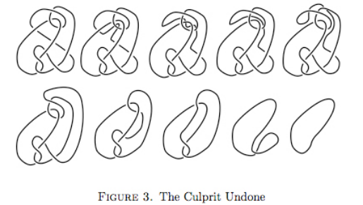
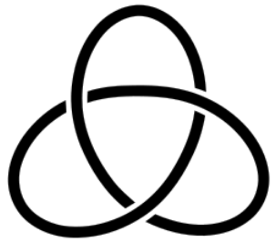

Invariant
1 Invariant as presentation of data
- Redundant presentations
Mathematics is of the bottom-up nature. As a result, objects of interest are often built up with primary concepts. This leads to a trivial yet worth-noting phenomenon, that descriptions of an object are often redundant. That is to say, one can often describe a single objects in multiple different ways. While this offers different perspectives, it could obscure the essence of an object.
A recurring scheme in mathematics is to reduce such redundancy. The simplest example, perhaps, is the equation, in which two descriptions are available for the number \(2\).
\[ 1 + 1 = 2. \]
Examples also arise in many problems in topology and geometry. Knot theory, being the simplest yet nontrivial in particular, is a rich source. Indeed, a knot, which is just a band in our space, can be presented in various ways. Unlike the first example, it is however an intellectually (very) expensive process to determine which presentations describe the same object. For instance, it isn't clear at all that all of the components in the figure present the same knot.
source 
It will be monumental to come up with a simpler distinguishing method. Due to its simplicity and complexity, knot theory is an interesting subject in modern mathematics. Elementary as it seems, knot theory remains an active research area, and finds important applications to modern quantum physics 1, 2, 3, 4, post quantum cryptography 5, chemistry and biology.
While some remains to find finer methods to reduce the complexity of a given knot, some others take a different approach by characterizing knots from another end. To understand this approach, consider the simplest instance, that the one below is clearly different from the knot above. A reason is that it has two connected components instead of one.

{kind=link}
Formally, this argument secretly uses a function
number-of-component on the space of knots to the space of
integers. The function tells us how many components the knot has,
and so while it evaluates to different integers on two
presentations, the two are known to be different. Similar
integer-valued functions are ubiquitous in math. For example, the
function cardinality distinguishes sets, and the function
dimension of all sorts distinguish spaces or other objects
(topological dimension of manifolds, cohomological dimension of
groups, combinatorial dimension of algebraic varieties.. etc.)
Two problems arise with this method. First of all, is this function easier to compute? Could it be almost as hard to compute as to determine the knot presentation? For instance, is it easy to tell that first knot presented above has only one component? Certainly, it is easier to know the number of components by tracing the strand, but it is not so easy as the complexity goes up. In such case, we say that our method is a (more) efficient invariant.
The other problem: Does this function distinguishes different knots completely? Could it be the case that two different knots got evaluated to the same value? The answer is yes, unfortunately. Shown below, same as the first knot above, a trefoil knot has only one component. But they are different knots. In this case, we say that our method is not a complete invariant.
source 
{kind=link}
The goal is now clear. We aim to find knot invariants that are both (more) efficient and (more) complete. A breakthrough was made by Carl F. Gauss, who found his Gauss linking integral via Gauss map around two centuries ago. Then knot theory hibernated for another century, only to find its next breakthrough in the end of the 19th century after the theory of fundamental groups was born out of hands of Henri Poincaré. There are a lot to be said about the fundamental groups, but the most enlightening and relevant part is that it extended our notion of what an invariant could be.
Indeed, humans have used numbers as an, and perhaps the only, abstract device to describe objects for a very long time. The number of oranges in a bag, the size of a pita bread, the amplitude of an angle, the interest rate of an investment, the dimension of our space-time.. etc. However, the fundamental group, being an invariant of spaces, uses algebraic objects as abstract device. Such leap has led mathematicians to find finer invariants in various disciplines. For example, algebraic topologists refined their descriptions for spaces by using vector spaces, rings, or even higher algebras 6.
Theorem Finite type nilpotent spaces X and Y are weakly equivalent if and only if the E∞-algebras C*(X) and C*(Y) are quasi-isomorphic.
In the context of knot theory, such leap unexpectedly brought us the quantum invariants of knots, first originated from Vaughan Jones' work on subfactors in the 80s 7. Peculiarly, Jones invariants take multivariate polynomials as values. Why such invariants exist wasn't clear until the late 80s 8. A whole quantum field theory about three-spaces is lurking behind the existence of Jones invariant.
Quantum field theory follows the same line of thought in terms of producing invariants. That is, instead of taking numbers, a quantum field theory takes (higher) categories as values 9, 10, which are yet another kinds of algebraic objects. The essential difference between higher categories and groups is that the former is of higher-dimensional and therefore has more space between its objects. This feature could allow us to not only assign invariants to the whole object, but also assign invariants to the inner structure of the objects. As a result, the invariant is more flexible and powerful, in the sense that it helps study objects alike to the original one as well.
…
Footnotes:
Braid group, knot theory, and statistical mechanics II-[Chen-Ning Yang and M. L. Ge]
Knots and physics-[Louis H. Kauffman]
The Geometry and Physics of Knots-[Michael Atiyah]
Gauge-Fields-Knots-and-Gravity-[Baez and Muniain]
Cochains and Homotopy Type-[Michael A. Mandell]
Knots, groups, subfactors and physics-[Vaughan Jones]
Quantum field theory and the Jones polynomial-[Edward Witten]
Topological quantum field theory-[Michael F. Atiyah]
On the Classification of Topological Field Theories-[Jacob Lurie]